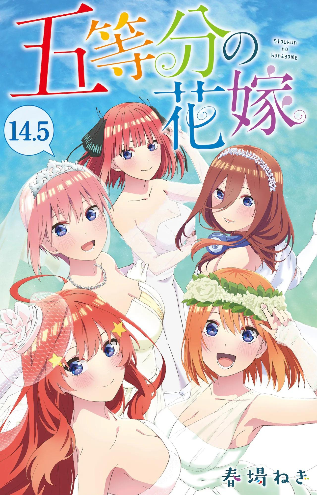

Gotoubun no Hanayome tendrá un capítulo adicional en mayo

En la edición más reciente de la revista Weekly Shonen Magazine se anunció que el manga escrito e ilustrado por Negi Haruba, Gotoubun no Hanayome (The Quintessential Quintuplets), tendrá un capítulo adicional que será publicado en la edición del próximo 18 de mayo de la revista. Este capítulo se titulará “Capítulo 122 + 1” y narrará qué pasó después del final de la obra original.
Adicionalmente, este capítulo será incluido en un “Volumen 14.5“, en conjunto con material de producción del largometraje, que será entregado como beneficio en cantidad limitada a quienes asistan a ver el próximo largometraje de la franquicia en cines de Japón, cuyo estreno está programado para el próximo 20 de mayo.
Negi Haruba publicó el manga en la revista Weekly Shonen Magazine de la editorial Kodansha entre agosto de 2017 y febrero de 2020, con un total de catorce volúmenes recopilatorios. La franquicia literaria ya cuenta con más de 16 millones de copias en circulación acumuladas, mientras que la obra inspiró una adaptación al anime de doce episodios producida por los estudios Tezuka Productions, bajo la dirección de Satoshi Kuwabara y estrenada en enero de 2019. Una segunda temporada de doce episodios fue producida por Bibury Animation Studios y se estrenó en enero de 2021.
Sinopsis de Gotoubun no Hanayome Fuutarou Uesugi es un excelente estudiante de preparatoria, pero lleva una vida difícil. Su personalidad distante y su naturaleza solitaria lo han dejado sin amigos, y su padre está endeudado, lo que obliga a su familia a luchar por sobrevivir. Un día, durante su pausa para el almuerzo, Uesugi discute con una estudiante de transferencia que ha reclamado “su asiento”, lo que hace que ambos se desagraden el uno con el otro. Ese mismo día, se le presenta una oportunidad de oro para saldar la deuda de su familia: un trabajo de tutoría privada para la hija de una familia adinerada, con un salario cinco veces superior al precio de mercado. Él acepta la propuesta, pero se horroriza al descubrir que el cliente, Itsuki Nakano, ¡es la chica a la que se enfrentó antes!
Después de intentar sin éxito conseguir la aprobación de Itsuki, Uesugi descubre que sus problemas no terminan ahí: Itsuki es en realidad una quintilliza, así que además de ella, también debe ser tutor de sus hermanas: Miku, Yotsuba, Nino e Ichika. —Que, a pesar de la amenaza muy real de reprobar, no quieren tener nada que ver con un tutor. Sin embargo, el sustento de su familia está en juego, por lo que Uesugi sigue adelante, firme en su determinación de librar a las hermanas de su odio por estudiar y llevarlas con éxito a la graduación.
Fuente: Comic Natalie
©春場ねぎ・講談社／「五等分の花嫁∬」製作委員会